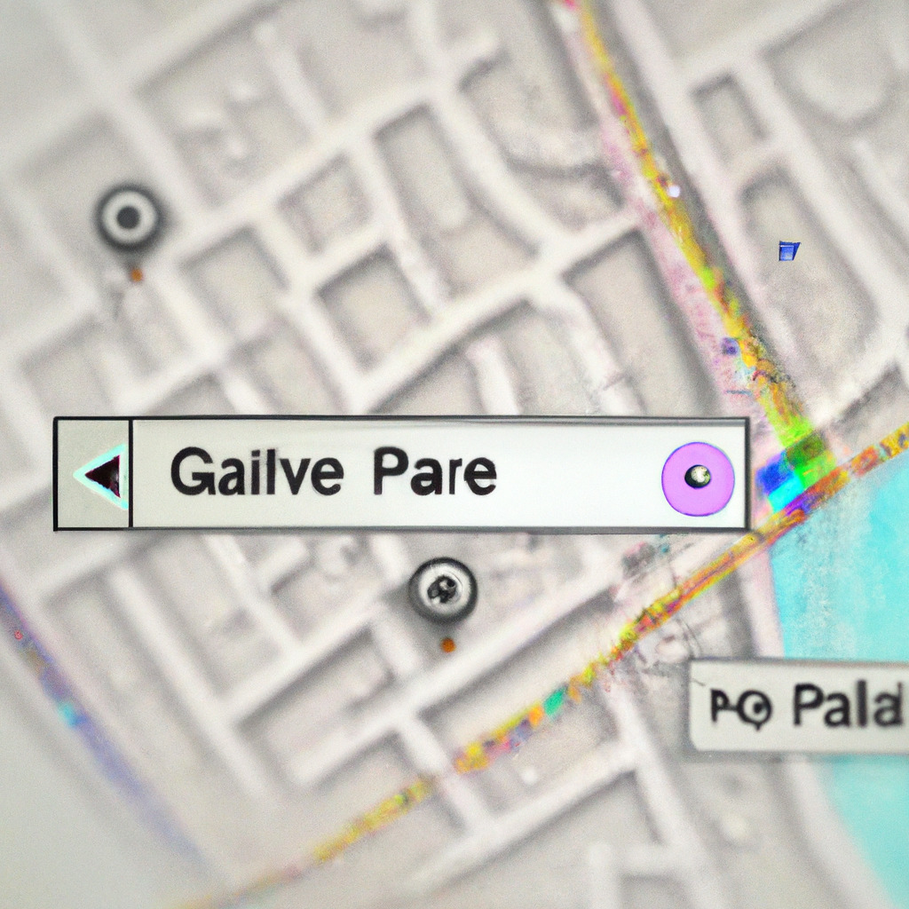

Breaking: Google Maps Now Offers Directions to Parallel Universes
In a groundbreaking announcement, Google has revealed that its popular navigation app, Google Maps, now offers directions to parallel universes. This revolutionary update expands the horizons of navigation and is expected to change the way we understand and interact with alternate realities.
The feature, dubbed "Parallel Navigation," uses advanced quantum computing and cutting-edge algorithms to locate rifts in the space-time continuum, which allow users to access parallel worlds. The app provides step-by-step directions to these rifts, enabling users to safely navigate to their desired alternate reality.
How does it work?
Parallel Navigation relies on a combination of sophisticated technologies to pinpoint the precise locations of these rifts. The app utilizes quantum GPS technology to triangulate the user's position and generate accurate routes to the nearest parallel universe entry point. Additionally, machine learning algorithms analyze and predict the properties of each alternate reality, providing users with a glimpse of what to expect upon arrival.
When using the app, users can simply enter their desired alternate reality, and Google Maps will calculate the most efficient route to the nearest rift. The app also provides information on the accessibility and safety of each parallel universe, helping users make informed decisions about their inter-dimensional travels.
Limitations and future developments
While this groundbreaking technology has the potential to revolutionize the way we explore alternate realities, it is not without its limitations. Currently, the feature is only available for select users as part of a limited beta test, and the number of accessible parallel universes is still relatively small. However, Google is working diligently to refine the technology and expand the number of alternate realities available to users.
As Google continues to develop this groundbreaking feature, the possibilities for exploration and discovery are virtually limitless. With the ability to navigate to parallel universes, we can gain unprecedented insights into alternate histories, scientific breakthroughs, and even the nature of existence itself. The